WHERE WE ARE
This is the opening chapter of the course. It contains no derivation that later chapters need, but it says what the course is for, how it is built, and where its subject comes from. It can be read on its own, as a short introduction to semiconductor devices for engineers; it is also the map that the following chapters fill in.
CHAPTER OUTLINE
0.1 Physics as a tool, devices as the goal
0.2 Many devices, one material
0.3 Beneath the cartoon: the engineer’s level
0.4 A framework, not a catalogue
0.5 The three cornerstones of the course
0.6 From vacuum tubes to transistors: a short history
0.7 Modern devices, technologies and markets
0.8 How a chip is made
Summary · Questions for reflection · Answers · References · Credits
LEARNING OBJECTIVES — WHAT THIS CHAPTER SETS OUT TO DO
Explain why a course on devices is a course on semiconductors, and why physics is used here as a tool rather than studied for itself.
Position the course with respect to simplified explanations: what it adds, and why an engineer needs it.
Present the framework of the course: two prototype devices and three cornerstones (currents, carrier concentrations, continuity equation).
Tell the story that led from the vacuum tube to the integrated circuit, and give the orders of magnitude of today’s industry and technology.
LEARNING OUTCOMES — BY THE END OF THE CHAPTER YOU CAN
classify devices by family (analog, digital, power) and by function (rectify, switch and amplify, interact with light, store), and say what they have in common;
state the three cornerstones of the course and say which chapter delivers each;
describe what a vacuum diode and a triode do, and why the transistor replaced them;
place on a timeline the main inventions, from the 1874 rectifying contact to the integrated circuit and the MOS transistor, with their inventors;
name the four building blocks of semiconductor devices and the main steps of chip fabrication, and explain what EUV lithography does and what a ‘3 nm’ node is (and is not).
HOW THIS CHAPTER WORKS
A narrative, not a formula sheet. The chapter tells why and how; the equations it shows are previews of what later chapters derive.
History with its physics. Each step of the history is attached to the physical idea that made it possible.
Facts rebuilt and cited. Tables and figures are drawn for this course from published facts; the sources are given at the end.
0.1 Physics as a tool, devices as the goal
THE QUESTION
The course is called ‘Semiconductor Devices Physics’. Is it a physics course?
The word physics in the title can be misread. Physics is not the goal of this course; it is its toolbox. The goal is to understand what happens inside the devices: why a diode lets current through in one direction only, why a transistor amplifies, why a junction emits light or turns light into electricity. To answer these questions we need physical tools, carrier transport, statistics, generation and recombination, and we shall take from physics exactly what the devices require, no more.
This choice shapes everything that follows. A concept enters the course when a device needs it, and its treatment stops when the device is explained. The test of each chapter is therefore not ‘is the physics complete?’ but ‘can we now say what the device does, and compute it?’
0.2 Many devices, one material
THE QUESTION
What do a microprocessor, a solar panel, a phone charger and a white LED have in common?
The word device covers an enormous family. Sorted by field of electronics, there are the devices of analog electronics (amplifiers, filters, sensors, radio-frequency circuits), of digital electronics (logic, processors, memories) and of power electronics (converters, motor drives, chargers). Sorted by function, some devices rectify (diodes), some switch and amplify (transistors), some interact with light (light-emitting diodes, lasers, solar cells, photodetectors), some store information (DRAM and flash memories).
The answer to the question is that all of them are made of semiconductors: mostly silicon, and for specific needs germanium, gallium arsenide, gallium nitride, silicon carbide or indium phosphide (Fig. 0.1). The devices are many and different; the material underneath is shared. This is why the semiconductor itself is the central subject of the course: understand the material and its few basic structures, and the devices become variations on a common theme.
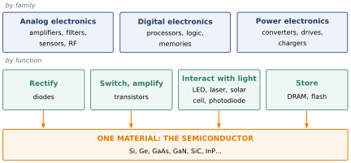
0.3 Beneath the cartoon: the engineer’s level
THE QUESTION
There are excellent videos explaining how a transistor works. Why a whole course?
A first picture of how a device works is easy to obtain today. Animated videos (the Branch Education channel is a good example), introductory books, or a question put to an AI assistant give, in a few minutes, a clear and largely correct working model: electrons flow here, a barrier forms there, the gate opens a channel. These pictures are useful, and we recommend them as a first contact.
They are not what this course does. A cartoon tells what happens; it cannot tell how much, how fast, under which conditions it stops being true, or what to change to make the device better. Those questions need the driving mechanisms and their equations. An engineer designs, sizes, diagnoses and improves; for that a working model is not enough, a solid scientific background is required. This is the level at which the course is written.
THE CARTOON AND THE ENGINEER
The cartoon gives a qualitative picture of the mechanism. It is the right first step, and a good way to check one’s intuition.
The engineer needs the mechanism and its quantitative description: which carriers, how many, which currents, which equation governs them, and within which assumptions.
The course goes from the first to the second: every mechanism is introduced with a picture, and then turned into an equation that can be solved.
0.4 A framework, not a catalogue
THE QUESTION
Will the course study every device?
No. What the course provides is a framework for studying devices, not a systematic review of all of them. A framework is a way of asking the questions and a set of tools to answer them; once acquired, it applies to devices the course never mentions.
The framework is built on prototype examples. The central one is the PN junction, the simplest structure in which the ideas of the course all appear together, and the basis of diodes, solar cells and LEDs. The second is the transistor effect, treated in the spirit of the bipolar transistor, which is two junctions sharing a thin region.
The MOS effect, on which today’s digital circuits rely, is deliberately not treated. This is a choice, not a gap: a student who has mastered the framework, carriers, currents, junctions and the continuity equation, will find the MOS transistor accessible in a later course or in industry, where it is the daily tool of microelectronics and of the semiconductor industry.
0.5 The three cornerstones of the course
THE QUESTION
Whatever the device, which questions shall we always ask?
All the work of the course revolves around three concepts, which the next four chapters establish one after the other (Fig. 0.2).
Currents. Wherever there is a device, there is a current; it is what the device delivers to the circuit. Chapter 1 builds the description of currents by drift in a field and by diffusion along a gradient, for instance for electrons:
Carrier concentrations. A current is carried by mobile charges, whose concentrations (electrons) and (holes) must be known. Chapter 2 explains what the carriers of a semiconductor are and how many there are; Chapter 3 shows what fixes them in equilibrium, and Chapter 4 how they return to it.
A governing equation. Concentrations change because carriers move (the divergence of the current) and because they are created and destroyed (generation and recombination ). This balance is the continuity equation:
Developed for the excess minority carriers in a nearly neutral region, it becomes the ambipolar equation of Chapter 4, which describes how injected carriers spread and disappear:
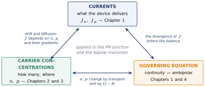
| Chapter | Question | Key result |
|---|---|---|
| 0 | Why devices, why semiconductors? | the framework and its history (this chapter) |
| 1 | How do carriers move? | drift and diffusion currents; Einstein relation; continuity equation |
| 2 | What are the carriers, and how many? | electrons and holes; doping; mass-action law |
| 3 | What fixes them in equilibrium? | bands; and of the pure semiconductor; Fermi level of doped material |
| 4 | How do they relax? | lifetime; ambipolar equation |
| next | Applying the framework | the PN junction (Chapters 5 to 7), then the bipolar transistor (Chapter 8) |
0.6 From vacuum tubes to transistors: a short history
THE QUESTION
Before 1947 there were radios, long-distance telephones and even computers. What did they use, and why was it replaced?
0.6.1 The vacuum-tube era
Before 1947, the devices that performed electronic functions were vacuum tubes. They did two things: they acted as valves, letting current flow one way or blocking it, which makes them switches for digital computation; and they acted as amplifiers, making a weak signal strong.
The story starts with a lamp. In 1879 Thomas Edison produced a practical incandescent lamp, a hot filament in a vacuum bulb. Around 1883 he noticed that a metal plate placed in the bulb collected a current when it was positive with respect to the filament, and none when it was negative: an asymmetry. The hot filament emits electrons (thermionic emission), and electrons can only travel from the filament to the plate.
In 1904 John Ambrose Fleming turned this asymmetry into a device, the thermionic valve or vacuum diode (Fig. 0.3a). It was a breakthrough because it detected radio signals reliably and made wireless telecommunication practical. In 1906 Lee de Forest placed a grid between filament and plate: a small voltage on the grid controls a large current to the plate. This is the triode (Fig. 0.3b), the first electronic amplifier and the first electronic switch. Amplification allowed AT&T to open the first transcontinental telephone line in 1915, with triode repeaters overcoming the attenuation of long lines; switching allowed the first electronic computers (ENIAC, 1945, with some 17 000 tubes) and IBM’s vacuum-tube machines of the early 1950s.
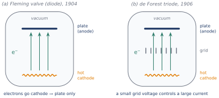
The current of a vacuum diode follows a law found by Child (1911) and Langmuir (1913), the first quantitative law of an electronic device: for a plate at a distance from the cathode, with and the charge and mass of the electron,
Tubes worked, but they were large, fragile, power-hungry (the filament must be heated), slow to warm up, and limited in frequency. A computer of thousands of tubes failed every few hours.
0.6.2 A crystal that worked without being understood
Meanwhile a much smaller device existed. In 1874 Ferdinand Braun discovered that a contact between a metal and certain crystals conducts better in one direction than in the other: the metal–semiconductor rectifying contact. From the early 1900s, notably with G. W. Pickard’s silicon detector patented in 1906, crystal detectors with a fine metal wire pressed on the crystal, the cat’s whisker, were used in crystal radio sets. They rectified, sometimes well, but nobody understood why, and their behaviour depended on finding the right spot on the crystal. A device that is not understood cannot be designed. This is exactly the situation the physics of semiconductors would change.
0.6.3 The transistor, 1947
After the Second World War, Bell Laboratories, the research centre of AT&T, set up a group led by William Shockley to build a solid-state replacement for the vacuum tube. The idea was to imitate the grid of the triode: to control the current in a semiconductor with a field applied from outside, a field effect. It did not work, because charges trapped at the surface screened the field. Studying this failure, John Bardeen and Walter Brattain found a different effect: in December 1947, two gold contacts pressed very close together on a germanium crystal gave power gain. This point-contact transistor worked by injecting minority carriers across a junction, not by a field effect: it was the first bipolar transistor. In 1948–1949 Shockley worked out the theory of the p–n junction and of the junction transistor, which was realised in 1951. The three men received the Nobel Prize in Physics in 1956.
The transistor was immediately used to amplify and to switch, and it transformed the industry: devices became smaller, cheaper, more reliable and more power-efficient, needed no warm-up, and worked at higher frequencies.
0.6.4 Integration, the MOS transistor, light and memory
The next step was to put many transistors on one piece of semiconductor. In 1958 Jack Kilby (Texas Instruments) built the first integrated circuit, on germanium, with its components connected by fine wires. In 1959 Robert Noyce (Fairchild), using the planar process of Jean Hoerni, made a monolithic silicon integrated circuit whose interconnections are deposited on the chip itself: this is the way all chips are made today. Also in 1959, at Bell Labs, Mohamed Atalla and Dawon Kahng made the first working MOS transistor (metal–oxide–semiconductor), reported in 1960. It realised the field effect that had failed in 1947, thanks to the clean silicon–oxide interface: a gate voltage controls the current through an insulator, a solid-state version of the vacuum-tube grid. Its complementary version (CMOS, 1963) became the basis of digital electronics.
Other effects followed in parallel. On the side of light: the first silicon solar cell (Bell Labs, 1954), the first visible LED and the semiconductor laser (1962), the bright blue LED (early 1990s) that completed white lighting. On the side of memory: the one-transistor DRAM cell (R. Dennard, 1966), the first commercial DRAM chip (1970), the floating-gate memory (1967) that led to flash memory in the 1980s. Figure 0.4 gathers the main steps.
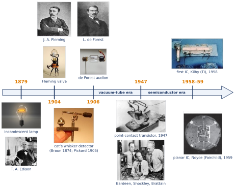
0.6.5 The equations behind the story
Each era of this story has its law (Fig. 0.5). Ohm’s law (1827) describes conduction globally; Chapter 1 writes it locally, with the current density J and the electric field :
Drude (1900) explained the conductivity by free electrons of concentration that collide every on average, the starting point of Chapter 1:
The Child–Langmuir law (1913) gave the current of the vacuum tube, equation (0.4). And Shockley (1949) derived the current of the p–n junction, the law of the semiconductor diode, which this course aims to understand and derive; is an ideality factor close to 1 and the thermal voltage:
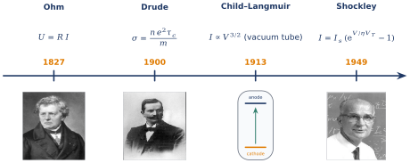
0.7 Modern devices, technologies and markets
THE QUESTION
Since 1947, which devices and which manufacturing techniques have built the industry, and how large has it become?
Tables 0.2 and 0.3 list the main devices and the main technologies, with their inventors. They are drawn up for this course from the historical record, as compiled in the references (Neamen; Sze and Lee).
| Year | Device | Inventors |
|---|---|---|
| 1874 | Metal–semiconductor rectifying contact | F. Braun |
| 1907 | Electroluminescence of a crystal (first LED effect, SiC) | H. J. Round |
| 1947 | Point-contact transistor | J. Bardeen, W. Brattain |
| 1949 | p–n junction theory; junction (bipolar) transistor | W. Shockley |
| 1954 | Silicon solar cell | D. Chapin, C. Fuller, G. Pearson |
| 1957 | Heterojunction bipolar transistor (concept) | H. Kroemer |
| 1958 | Tunnel diode | L. Esaki |
| 1958–59 | Integrated circuit; monolithic planar IC | J. Kilby; R. Noyce |
| 1959 | MOS field-effect transistor | M. Atalla, D. Kahng |
| 1962 | Semiconductor laser; visible LED | R. Hall et al.; N. Holonyak |
| 1963 | CMOS logic | F. Wanlass, C. T. Sah |
| 1966 | One-transistor DRAM cell | R. Dennard |
| 1967 | Floating-gate non-volatile memory | D. Kahng, S. M. Sze |
| 1969 | Charge-coupled device (image sensor) | W. Boyle, G. Smith |
| 1971 | Microprocessor (Intel 4004) | M. Hoff, F. Faggin, S. Mazor, M. Shima |
| 1993 | Bright blue LED (GaN) | S. Nakamura; I. Akasaki, H. Amano |
| Year | Technology | Inventors / first users |
|---|---|---|
| 1918 | Czochralski crystal growth | J. Czochralski |
| 1925 | Bridgman crystal growth | P. W. Bridgman |
| 1952 | Zone refining (purification) | W. G. Pfann |
| 1957 | Photoresist lithography | J. Andrus |
| 1957 | Oxide masking for diffusion | C. Frosch, L. Derick |
| 1957 | Epitaxial growth by chemical vapour deposition | J. J. Sheftal et al. |
| 1959 | Planar process | J. Hoerni |
| 1969 | Self-aligned polysilicon gate | R. Kerwin et al. |
| 1969 | Metal-organic chemical vapour deposition (MOCVD) | H. Manasevit |
| 1971 | Molecular-beam epitaxy | A. Y. Cho |
| 1971 | Dry (plasma) etching | S. Irving et al. |
| 1989 | Chemical–mechanical polishing (CMP) | B. Davari et al. |
| 1997 | Copper interconnects in production | IBM |
| 2011 | FinFET (tri-gate) transistors in production | Intel |
| 2019 | EUV lithography in volume production | ASML; TSMC, Samsung |
| 2022 | Gate-all-around (nanosheet) transistors in production | Samsung |
The four building blocks. Behind this long list, very few structures are at work (Fig. 0.6). The metal–semiconductor contact (rectifying or ohmic), the p–n junction, the heterojunction between two different semiconductors, and the metal–oxide–semiconductor structure. Almost every device is one of them, or a combination: a bipolar transistor is two p–n junctions, a MOS transistor is a MOS structure with two junctions, a laser diode is a set of heterojunctions. This is why a course that understands the p–n junction already holds the key to most of the field.
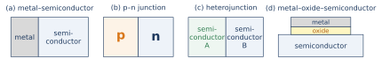
A market that entered every industry. Semiconductors are no longer confined to electronics: they are in cars, energy, medicine, industry and telecommunications. World sales have grown by a factor of about twelve in 34 years (Fig. 0.7).
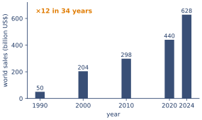
Shrinking dimensions. In 1965 Gordon Moore observed that the number of components on a chip doubled every year; in 1975 he revised the pace to every two years. This Moore’s law is not a law of physics but an industrial roadmap, kept for half a century by reducing the dimensions: the minimum feature size went from about 10 µm in 1971 to a few tens of nanometres, and the capacity of a DRAM chip rose from 1 kbit to tens of gigabits (Fig. 0.8).
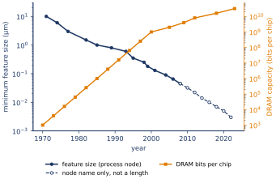
0.8 How a chip is made
THE QUESTION
How do we go from sand to a chip carrying billions of transistors?
The flow is summarised in Fig. 0.9. Silicon is extracted from quartz sand (SiO₂), then purified into polysilicon of extreme purity, about one foreign atom per billion. It is melted and pulled into a single crystal by the Czochralski method: a seed crystal is dipped into the melt and slowly raised while rotating, producing an ingot up to 300 mm in diameter. The ingot is sliced into wafers, which are polished to a mirror finish.
Devices are then built at the surface of the wafer, layer by layer. The front end creates the transistors by repeating a few operations many times: oxidation (growing SiO₂), lithography (printing a pattern), etching (removing material where the pattern says), doping (by diffusion or ion implantation), deposition of thin films, and chemical–mechanical polishing to flatten the surface. The back end builds the copper interconnects, a dozen or more metal levels that wire the transistors together. Finally the chips are tested, cut and packaged.
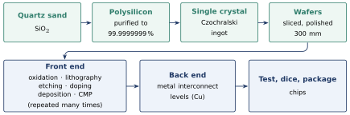
Lithography is the key step, because it fixes the dimensions (Fig. 0.10). A light-sensitive resist is spread on the wafer and exposed through a mask carrying the pattern; the exposed (or unexposed) resist is dissolved; the pattern is then transferred into the layer underneath by etching, and the resist is removed. A chip needs several dozen such cycles.
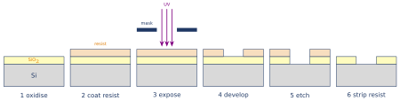
The smallest pattern that light can print is of the order of its wavelength divided by the numerical aperture of the optics. The industry has therefore moved to shorter and shorter wavelengths (Fig. 0.11): mercury-lamp lines at 436 and 365 nm, then excimer lasers at 248 and 193 nm, then 193 nm light through water (immersion), and finally extreme ultraviolet (EUV) light at 13.5 nm, in volume production since 2019. EUV light is absorbed by air and by glass: it is produced by a tin plasma and focused by mirrors in vacuum. The only manufacturer of these machines is the Dutch company ASML.
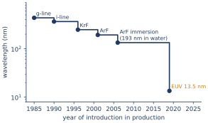
BE AWARE OF… Two points of accuracy. First, the EUV machine performs the lithography, i.e. the exposure of the pattern; etching is a separate step done afterwards in other equipment. Second, a name such as ‘3 nm’ designates a technology generation (a node), not a dimension of the transistor. In current ‘3 nm’ processes the contacted gate pitch is of the order of 45–50 nm and the tightest metal pitch of the order of 20–25 nm; no feature is 3 nm long. Since about 2010, node names have followed the historical sequence rather than a physical length.
Summary — essential knowledge
WHAT YOU MUST KNOW
Purpose. The course aims to understand devices; physics is the toolbox, used as far as the devices require.
One material. Analog, digital and power devices, and devices that rectify, amplify, interact with light or store, are all made of semiconductors: the semiconductor is the central subject.
Level. The course goes beneath the qualitative ‘cartoon’ to the mechanisms and their equations, the background an engineer needs.
Framework. Prototype devices: the PN junction and the bipolar transistor. The MOS effect is not treated but becomes accessible through the framework.
Cornerstones. Currents (Chapter 1), carrier concentrations (Chapters 2 and 3), continuity equation , developed into the ambipolar equation (Chapter 4).
History. Edison lamp (1879) and Edison effect; Fleming diode (1904); de Forest triode (1906); Braun’s rectifying contact (1874) and the crystal detector; point-contact transistor (Bardeen, Brattain, 1947) and junction transistor (Shockley, 1949–1951); integrated circuit (Kilby 1958, Noyce 1959); MOS transistor (Atalla, Kahng, 1959).
Industry. Four building blocks (metal–semiconductor, p–n, heterojunction, MOS); sales multiplied by about 12 since 1990; feature sizes divided by more than 100 since 1971.
Fabrication. Sand → polysilicon → Czochralski ingot → wafers → front end (oxidation, lithography, etching, doping, deposition, CMP) → back end (interconnects) → chips. EUV lithography uses 13.5 nm light; node names are not lengths.
Questions for reflection
These questions check the ideas of the chapter; answers are given below.
Why is a course on semiconductor devices mainly a course on semiconductors?
What can an animated explanation of a transistor not tell an engineer?
Why does the course study the PN junction and the bipolar transistor rather than a long list of devices? Why is the MOS transistor not a gap?
Name the three cornerstones of the course and the chapter that delivers each.
What asymmetry did Edison observe, and which device did Fleming build on it? What did de Forest add?
The 1947 team was trying to build a field-effect device. What did they obtain instead, and when was the field effect finally realised?
List four advantages of the transistor over the vacuum tube.
What does an EUV machine do, and what does the name ‘3 nm node’ mean?
Answers
Show the answers (try the questions first)
Because devices of every family and function are made of the same class of materials; understanding the material and its few basic structures explains the devices.
How much current, how fast, under which conditions the picture fails, and what to change to improve the device: these need the mechanisms and their equations.
The course gives a framework; the PN junction contains all its ideas and the bipolar transistor is two junctions. The MOS transistor relies on the same carriers, currents and junctions, so it becomes accessible once the framework is mastered.
Currents (Chapter 1); carrier concentrations (Chapters 2 and 3); the continuity equation, developed into the ambipolar equation (Chapters 1 and 4).
A plate in the lamp collects current only when positive with respect to the hot filament (thermionic emission). Fleming built the vacuum diode (1904); de Forest added a grid (1906), giving the triode, an amplifier and a switch.
They obtained bipolar action, minority-carrier injection, in the point-contact transistor (December 1947). The field effect was realised in 1959 by Atalla and Kahng with the MOS transistor.
Smaller, cheaper, more reliable, more power-efficient (no heated filament), no warm-up, higher frequencies.
It performs lithography with 13.5 nm light, i.e. prints the pattern; etching is a separate step. ‘3 nm’ is the name of a technology generation, not a physical dimension.
References
D. A. Neamen, Semiconductor Physics and Devices: Basic Principles, 4th ed., McGraw-Hill, 2012 (main reference of the course; historical tables of devices and technologies).
S. M. Sze and M. K. Lee, Semiconductor Devices: Physics and Technology, 3rd ed., Wiley, 2012.
S. M. Sze and K. K. Ng, Physics of Semiconductor Devices, 3rd ed., Wiley, 2007.
M. Riordan and L. Hoddeson, Crystal Fire: The Invention of the Transistor and the Birth of the Information Age, Norton, 1997.
G. E. Moore, ‘Cramming more components onto integrated circuits’, Electronics, 38(8), 1965.
World Semiconductor Trade Statistics (WSTS), market reports (www.wsts.org).
Branch Education (video channel), animated explanations of electronic devices, recommended as a first contact.
CREDITS AND ACKNOWLEDGEMENTS Images. The portraits and photographs of Figures 0.4 and 0.5 are historical photographs; their sources must be confirmed before any public distribution of this text. All other figures and all tables were drawn for this course from published facts, cited above.
Preparation. This course was written by Dr Bassem CHAABANE with the assistance of Claude, an AI model by Anthropic, used for drafting, figures and consistency checks; the content and its choices are the author’s.
WHERE THIS LEADS Chapter 1 opens the toolbox with the first cornerstone: how carriers move, how currents are written, and how the continuity equation expresses the balance of carriers. The devices of this chapter will come back, explained, once the framework is in place.